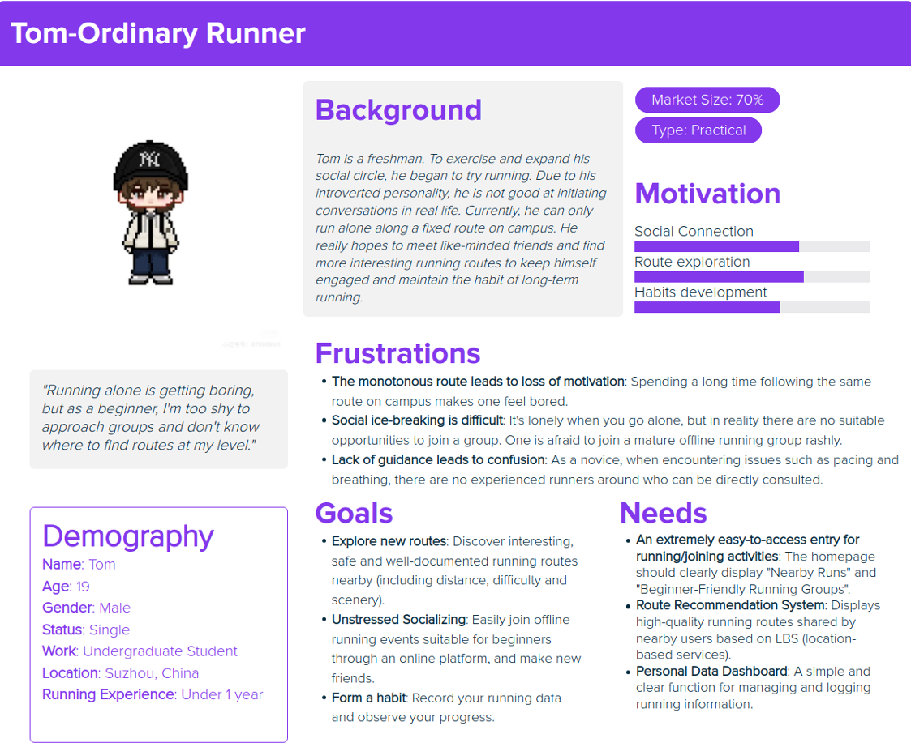
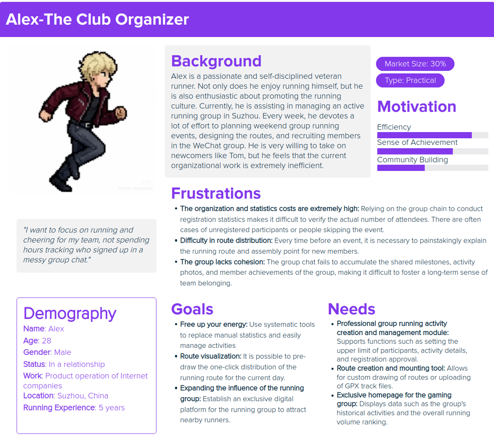

Part 1
Motivation & Research
1. Motivation
Our group chose the Active Lifestyles track, specifically focusing on the running community, because we observed significant social and logistical friction that prevents running from being a truly engaging, shared experience.
While running is highly popular, it frequently remains a solitary and isolating activity. Many individuals struggle to maintain long-term motivation because finding compatible running partners—people with similar paces, schedules, or goals—is surprisingly difficult and intimidating. Furthermore, runners often experience "route fatigue," running the same paths repeatedly due to a lack of accessible, trustworthy information about safe and interesting localized alternatives.
On a community level, the vibrant culture of running clubs is heavily hindered by logistical hurdles. Activity organizers currently face overwhelming friction when trying to coordinate group events, often relying on a chaotic mix of fragmented social media platforms. This inefficiency stifles community growth and makes it harder for both novices and veterans to integrate into local groups.
Ultimately, our motivation is driven by these unaddressed pain points. We aim to explore how human-centric design can eliminate these barriers, transforming a solitary physical exercise into a highly connected, sustainable, and playful community endeavor.
2. Research Gap (The Gap)
Academic Research (4 Papers): Explored gamification in physical activity, motivational mechanisms in exercise apps, effectiveness of gamified health interventions, and location-based interactive experiences.
Commercial Products (4 Products): Strava, Nike Run Club, Zombies, and Runkeeper.
✅ What They Did Well
- Precise data tracking: Highly accurate personal biometric records—GPS traces, pace, and heart-rate zones—meeting core performance-monitoring needs.
- Asynchronous gamification: Mature personal achievement systems (virtual medals, levels) and asynchronous competition through leaderboards.
- Structured training: Rich professional programs and voice coaching that help users improve individual athletic performance.
❌ What They Missed
- Lack of route discovery: Typical running apps offer little native route discovery or recommendation; users repeat the same familiar areas, which easily leads to environmental fatigue.
- Absence of real-time run-matching: Social interaction is mostly limited to post-run likes and comments, with no strong mechanism for location-based synchronous “run together” matching that helps people overcome social barriers.
- Fragmented community management: Few tools built for clubs or communities, so event posting, registration, and organization depend on third-party social apps—splitting the full exercise experience across disconnected channels.
3. Stakeholders (The Stakeholders)
Primary personas are presented below as full persona sheets (demographics, goals, pain points, and needs appear in each image).

